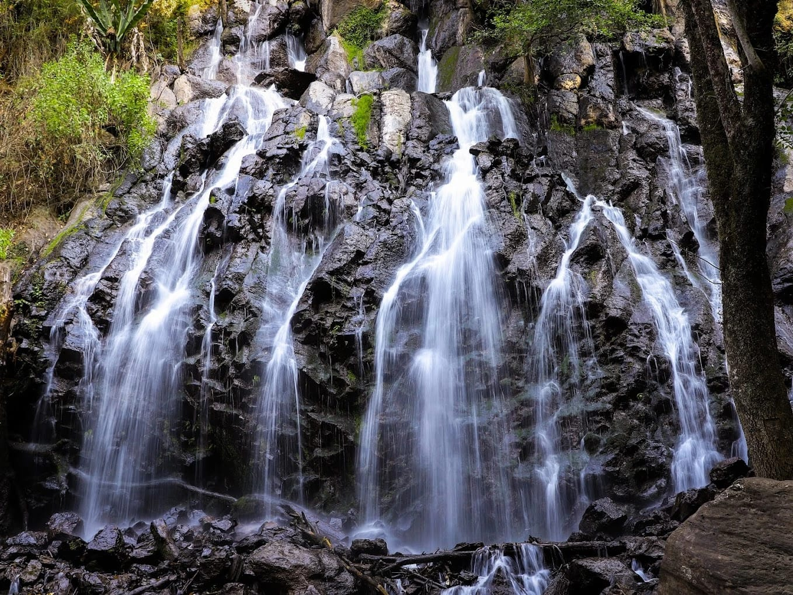
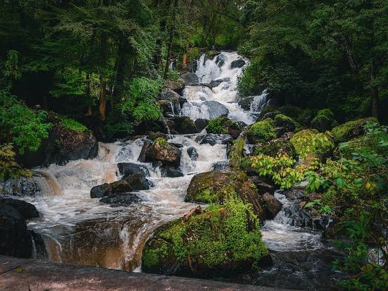
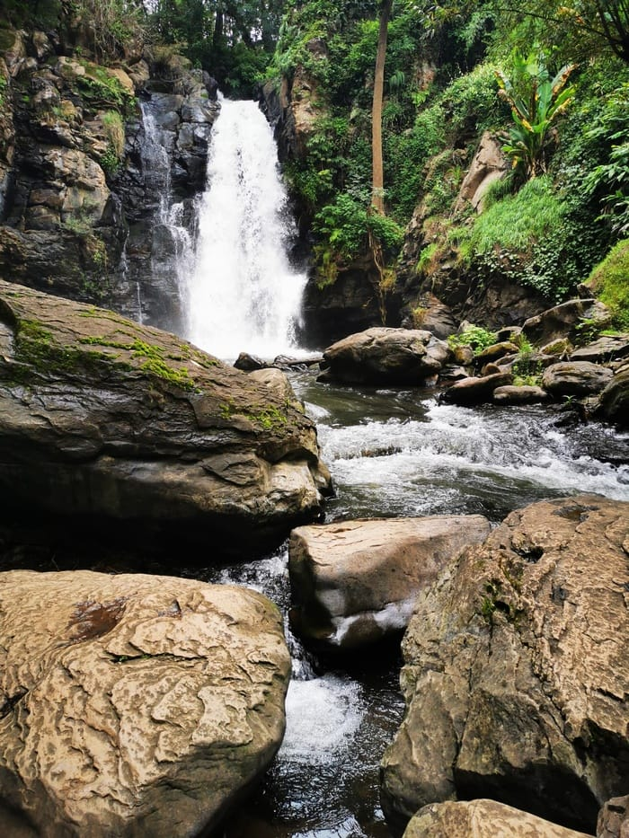

Velo de Novia:
Es la más famosa y la más alta, mide 35 metros. Queda a 20 min del centro, en Avándaro. Se llama así porque el agua cae como un velo blanco de novia, y hay una leyenda de una novia que la dejaron plantada. Tiene mirador y bosque de pinos, pero no es para nadar, solo para mirar y fotos.

Piedra de Molino:
Queda a 10 min del centro. Se llama así porque antes su agua movía los molinos que molían granos del pueblo. Su agua es fría y transparente, viene del Nevado de Toluca y llega al lago. Aquí sí puedes caminar, hacer picnic y nadar en las pozas bajitas.

Refugio del Salto:
Es la más chiquita, mide 15 metros y está escondida junto a las otras dos, se baja por las escaleras del Río del Molino. Es la más tranquila, casi no hay gente, ideal para descansar, fotos y mojarte los pies.
